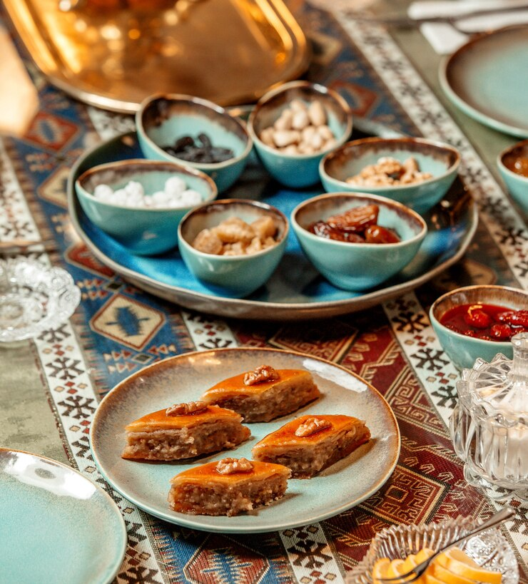

Gourmandises Maghrébines : Un Voyage Culinaire entre le Maroc et la Tunisie
Les cuisines maghrébines, avec leurs saveurs riches et variées, sont un véritable délice pour les papilles.
Le Maroc et la Tunisie, deux pays du Maghreb, offrent des mets sucrés et salés qui racontent des histoires de traditions anciennes et de mélanges d'épices.
Dans cet article, nous vous invitons à découvrir quelques-unes des gourmandises les plus populaires de ces deux pays.